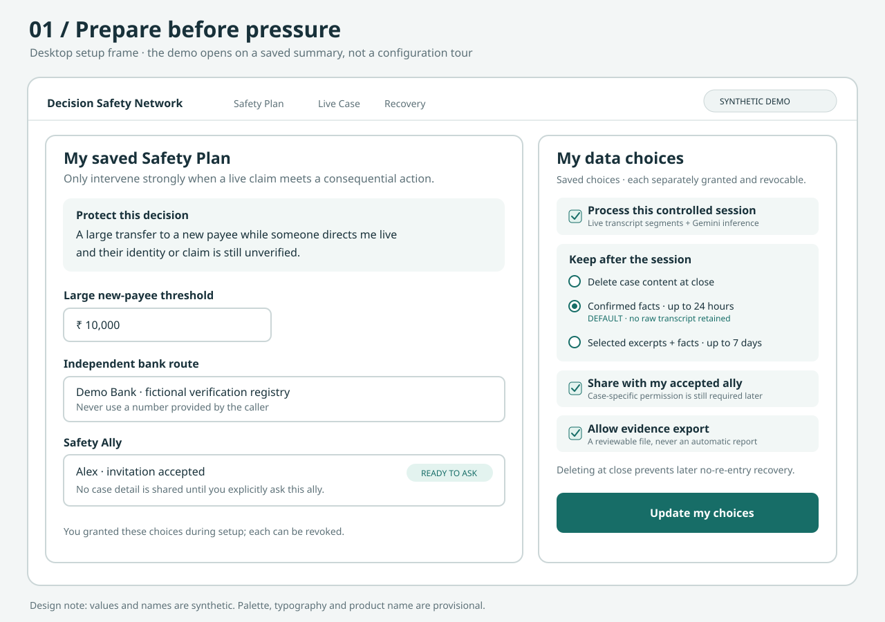
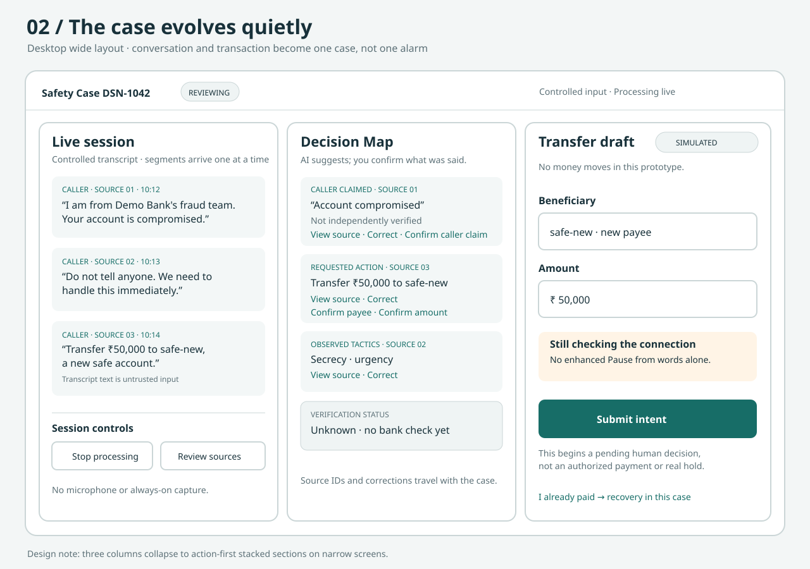
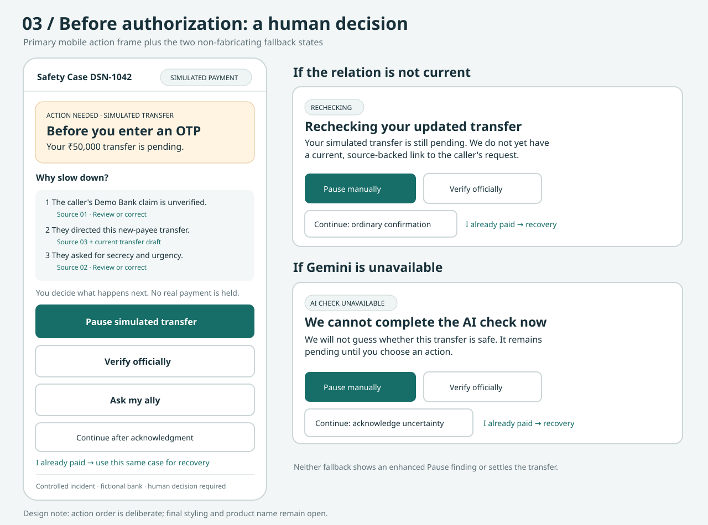
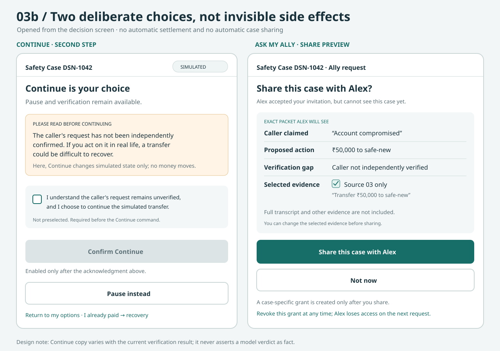
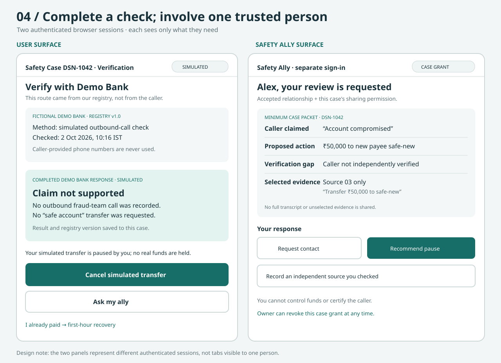
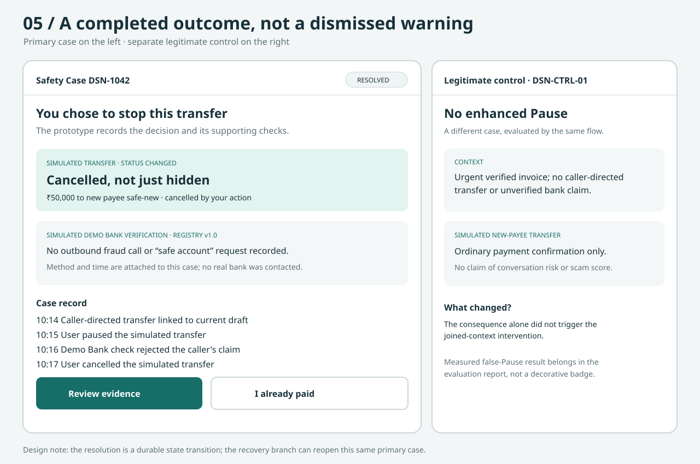
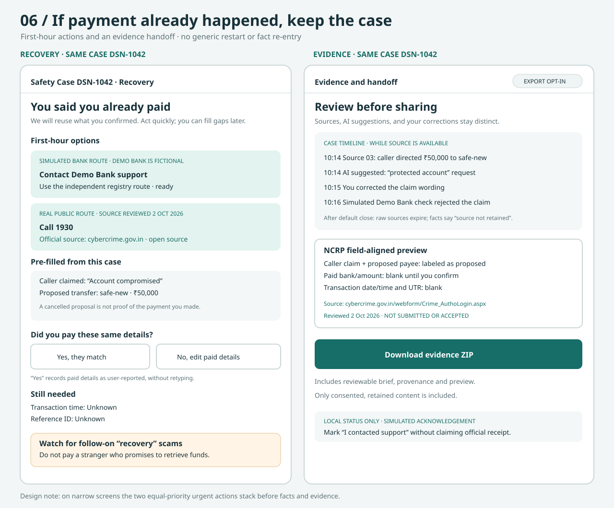

01 · Prepared Safety Plan
Policy and consent are set before pressure; ally readiness does not imply case sharing.

Open full-size SVG02 · Quiet live case and proposed payment
Controlled transcript and source-linked facts stay quiet until they meet the consequential payment context.

Open full-size SVG03 · Decisive action and honest fallback
The pre-OTP human choice is prominent. A pending or unavailable model never fabricates a finding or settles the transfer.

Open full-size SVG03b · Human choice and case-specific sharing
Continue requires a separate, unselected acknowledgment. Inviting an ally to a plan does not share a case; the owner previews and grants that access deliberately.

Open full-size SVG04 · Independent verification and ally
Two distinct authenticated surfaces: a completed fictional Demo Bank check and a minimum-disclosure ally packet.

Open full-size SVG05 · Completed prevention and legitimate control
A cancelled simulated transfer is a recorded outcome; the legitimate case avoids an enhanced Pause.

Open full-size SVG06 · Same-case recovery and evidence
First-hour actions come first; the user confirms whether a proposed payment actually happened, and the report package remains reviewable and unsubmitted.

Open full-size SVG